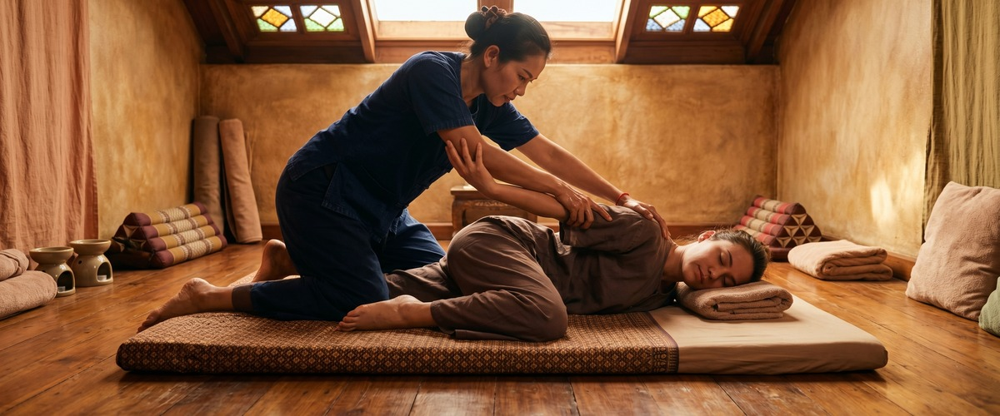
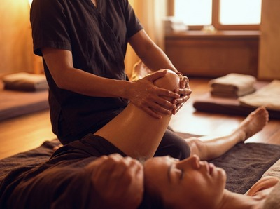
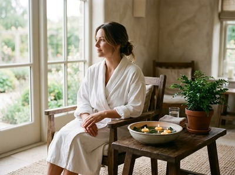

If tight muscles, stiff joints, or accumulated tension are affecting how you move and feel, traditional Thai massage in Greenock addresses those problems at their source.

Thai Massage Greenock offers this ancient therapy to help you move freely, recover fully, and feel genuinely restored.
Traditional Thai massage, known as Nuad Thai, combines acupressure, assisted stretching, and rhythmic pressure along the body's sen energy lines. Unlike oil massage, it is performed fully clothed on a padded mat. Your therapist guides you through passive yoga-like movements that open joints and release deep muscle tension.

Hands, thumbs, elbows, forearms, and knees are all used to apply precise pressure along these energy pathways. This restores circulation and helps rebalance the body.
Dating back more than 2,500 years, this is not a surface-level treatment. It works on layers of muscle and connective tissue that lighter massage rarely reaches. The stretching component also improves range of motion in ways that pressure alone cannot.
This treatment suits a wide range of people. Desk workers carrying tension in their neck and shoulders, people with lower back pain from long hours of sitting, and anyone whose flexibility has dropped over time will all notice real results.
It works equally well for athletes who want to maintain range of motion and recover faster between sessions. If stress has your body feeling wound tight and your sleep suffering, traditional Thai massage in Greenock is one of the most effective ways to break that cycle.
Sessions run for 60 or 90 minutes. You stay fully clothed throughout, so wear something loose and comfortable. You will start lying on a padded mat while your therapist applies palm and thumb pressure along your legs and back, then gently guides you through a series of assisted stretches.
The session feels more active than a standard massage. Some stretches feel intense, but everything stays within your comfort range. You can book your session online ahead of your visit.

Afterwards, most clients feel a mix of lightness and deep calm. Muscles that have been tight for months often feel noticeably looser within a day or two.
Some clients feel mildly tired on the evening after their first session. This is the body processing the work done. It is normal and passes quickly.
Every treatment at Thai Massage Greenock is delivered personally by Jariya Malone. Jariya is certified at Bangkok's Wat Po temple — the birthplace of traditional Thai massage. She keeps detailed notes on every client and builds each session on what came before.
There are no scripts and no shortcuts. If you are ready to experience the difference that authentic technique makes, book your traditional Thai massage with Thai Massage Greenock today.
No. Traditional Thai massage is performed fully clothed throughout. Wear loose, comfortable clothing such as joggers and a t-shirt that allow free movement. You do not need to bring anything special as the session takes place on a padded mat on the floor.
Sessions are available in 60 or 90-minute durations. For a first visit, a 90-minute session is recommended as it allows enough time to work through the full body properly. Shorter sessions can be effective for targeting specific areas of concern on return visits.
Most clients leave feeling lighter, looser, and deeply relaxed. It is common to feel mild tiredness on the evening of your first session as your body responds to the treatment. This passes quickly, and by the following day most clients notice improved flexibility and reduced tension.
For general wellbeing and stress management, once every two to four weeks works well for most people. If you are dealing with a specific issue such as chronic back pain or postural tension from desk work, weekly sessions in the early stages tend to produce faster results. Jariya will advise you on a schedule that fits your needs and goals.
Absolutely. Many clients at Thai Massage Greenock come with no previous experience of Thai massage. Jariya starts with a conversation about how you are feeling and what you want from the session, so the treatment is always tailored to your comfort level. Nothing is forced, and all stretches stay within a range that feels manageable for you.
Traditional Thai massage is performed fully clothed and focuses on acupressure and assisted stretching along the sen energy lines. It works deeply into joints and muscles. Thai oil massage uses oils applied directly to the skin, with flowing strokes and targeted pressure suited to those who prefer a more fluid, relaxing experience. Both are highly effective — the best choice depends on your goals and preference.